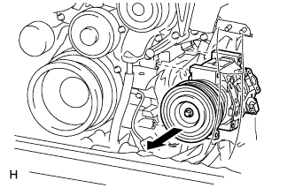

COMPRESSOR (for 1VD-FTV) > REMOVAL |
| 1. RECOVER REFRIGERANT FROM REFRIGERATION SYSTEM |
Start the engine.
Turn the A/C switch on.
Operate the cooler compressor while the engine speed is approximately 1000 rpm for 5 to 6 minutes to circulate the refrigerant and collect the compressor oil remaining in each component into the cooler compressor.
Stop the engine.
Recover the refrigerant from the A/C system using a refrigerant recovery unit.
| 2. REMOVE RADIATOR ASSEMBLY |
Remove the radiator assembly (Click here).
| 3. REMOVE INTERCOOLER ASSEMBLY |
Remove the intercooler assembly (Click here).
| 4. REMOVE NO. 2 AIR CLEANER PIPE SUB-ASSEMBLY |
 |
Disconnect the ventilation hose from the oil separator.
Loosen the hose clamp.
Remove the bolt and No. 2 air cleaner pipe.
| 5. REMOVE NO. 2 AIR TUBE ASSEMBLY |
 |
Remove the bolt and No. 2 air tube.
Remove the O-ring.
| 6. DISCONNECT NO. 1 COOLER REFRIGERANT DISCHARGE HOSE |
 |
Remove the bolt and disconnect the discharge hose from the cooler compressor.
Remove the O-ring from the discharge hose.
| 7. DISCONNECT SUCTION HOSE SUB-ASSEMBLY |
 |
Remove the bolt and disconnect the suction hose from the cooler compressor.
Remove the O-ring from the suction hose.
| 8. REMOVE COOLER COMPRESSOR ASSEMBLY |
 |
Disconnect the connector.
Remove the 4 bolts.
 |
Remove the cooler compressor as shown in the illustration.